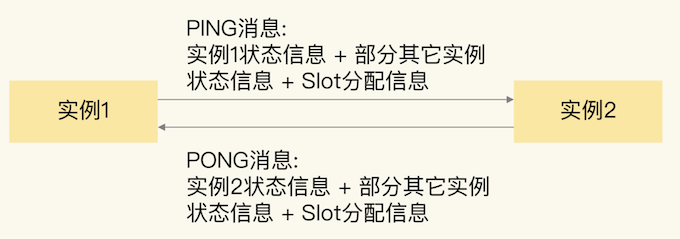

第六节 限制Redis Cluster规模的关键因素：通信开销
Redis Cluster 能保存的数据量以及支撑的吞吐量，跟集群的实例规模密切相关。Redis 官方给出了 Redis Cluster 的规模上限，就是一个集群运行 1000 个实例。
其实，这里的一个关键因素就是，实例间的通信开销会随着实例规模增加而增大，在集群超过一定规模时（比如 800 节点），集群吞吐量反而会下降。所以，集群的实际规模会受到限制。
通过合理的配置来扩大 Redis Cluster 的规模，同时保持高吞吐量。
1、实例通信方法和对集群规模的影响
Redis Cluster 在运行时，每个实例上都会保存 Slot 和实例的对应关系（也就是 Slot 映射表），以及自身的状态信息。
为了让集群中的每个实例都知道其它所有实例的状态信息，实例之间会按照一定的规则进行通信。这个规则就是 Gossip 协议。
1-1 Gossip 协议
Gossip 协议的工作原理可以概括成两点。
一是，每个实例之间会按照一定的频率，从集群中随机挑选一些实例，把 PING 消息发送给挑选出来的实例，用来检测这些实例是否在线，并交换彼此的状态信息。
PING 消息中封装了发送消息的实例自身的状态信息、部分其它实例的状态信息，以及 Slot 映射表。
二是，一个实例在接收到 PING 消息后，会给发送 PING 消息的实例，发送一个 PONG 消息。PONG 消息包含的内容和 PING 消息一样。
下图显示了两个实例间进行 PING、PONG 消息传递的情况。

Gossip 协议可以保证在一段时间后，集群中的每一个实例都能获得其它所有实例的状态信息。
这样一来，即使有新节点加入、节点故障、Slot 变更等事件发生，实例间也可以通过 PING、PONG 消息的传递，完成集群状态在每个实例上的同步。
实例间使用 Gossip 协议进行通信时，通信开销受到通信消息大小和通信频率这两方面的影响
消息越大、频率越高，相应的通信开销也就越大。如果想要实现高效的通信，可以从这两方面入手去调优。
2、Gossip 消息大小
Redis 实例发送的 PING 消息的消息体是由 clusterMsgDataGossip 结构体组成的，这个结构体的定义如下所示：
typedef struct {
char nodename[CLUSTER_NAMELEN]; //40字节
uint32_t ping_sent; //4字节
uint32_t pong_received; //4字节
char ip[NET_IP_STR_LEN]; //46字节
uint16_t port; //2字节
uint16_t cport; //2字节
uint16_t flags; //2字节
uint32_t notused1; //4字节
} clusterMsgDataGossip;
其中，CLUSTER_NAMELEN 和 NET_IP_STR_LEN 的值分别是 40 和 46，分别表示，nodename和 ip 这两个字节数组的长度是 40 字节和 46 字节，我们再把结构体中其它信息的大小加起来，就可以得到一个 Gossip 消息的大小了，即 104 字节。
每个实例在发送一个 Gossip 消息时，除了会传递自身的状态信息，默认还会传递集群十分之一实例的状态信息。
所以，对于一个包含了 1000 个实例的集群来说，每个实例发送一个 PING 消息时，会包含 100 个实例的状态信息，总的数据量是 10400 字节，再加上发送实例自身的信息，一个 Gossip 消息大约是 10KB。
此外，为了让 Slot 映射表能够在不同实例间传播，PING 消息中还带有一个长度为 16,384 bit 的 Bitmap，这个 Bitmap 的每一位对应了一个 Slot，如果某一位为 1，就表示这个 Slot 属于当前实例。这个 Bitmap 大小换算成字节后，是 2KB。我们把实例状态信息和 Slot 分配信息相加，就可以得到一个 PING 消息的大小了，大约是 12KB。
PONG 消息和 PING 消息的内容一样，所以，它的大小大约是 12KB。每个实例发送了 PING 消息后，还会收到返回的 PONG 消息，两个消息加起来有 24KB。
虽然从绝对值上来看，24KB 并不算很大，但是，如果实例正常处理的单个请求只有几 KB 的话，那么，实例为了维护集群状态一致传输的 PING/PONG 消息，就要比单个业务请求大了。
而且，每个实例都会给其它实例发送 PING/PONG 消息。随着集群规模增加，这些心跳消息的数量也会越多，会占据一部分集群的网络通信带宽，进而会降低集群服务正常客户端请求的吞吐量。
除了心跳消息大小会影响到通信开销，如果实例间通信非常频繁，也会导致集群网络带宽被频繁占用
3、实例间通信频率
Redis Cluster 的实例启动后，默认会每秒从本地的实例列表中随机选出 5 个实例，再从这 5 个实例中找出一个最久没有通信的实例，把 PING 消息发送给该实例。这是实例周期性发送 PING 消息的基本做法。
有一个问题：实例选出来的这个最久没有通信的实例，毕竟是从随机选出的 5 个实例中挑选的，这并不能保证这个实例就一定是整个集群中最久没有通信的实例。
这有可能会出现，有些实例一直没有被发送 PING 消息，导致它们维护的集群状态已经过期了。
为了避免这种情况，Redis Cluster 的实例会按照每 100ms 一次的频率，扫描本地的实例列表，如果发现有实例最近一次接收 PONG 消息的时间，已经大于配置项 cluster-node-timeout 的一半了（cluster-node-timeout/2），就会立刻给该实例发送 PING 消息，更新这个实例上的集群状态信息。
当集群规模扩大之后，因为网络拥塞或是不同服务器间的流量竞争，会导致实例间的网络通信延迟增加。如果有部分实例无法收到其它实例发送的 PONG 消息，就会引起实例之间频繁地发送 PING 消息，这又会对集群网络通信带来额外的开销了。
总结下单实例每秒会发送的 PING 消息数量，如下所示：
PING 消息发送数量 = 1 + 10 * 实例数（最近一次接收 PONG 消息的时间超出 cluster-node-timeout/2）
其中，1 是指单实例常规按照每 1 秒发送一个 PING 消息，10 是指每 1 秒内实例会执行 10 次检查，每次检查后会给 PONG 消息超时的实例发送消息。
分析一下在这种通信频率下，PING 消息占用集群带宽的情况。
假设单个实例检测发现，，每 100 毫秒有 10 个实例的 PONG 消息接收超时，那么，这个实例每秒就会发送 101 个 PING 消息，约占 1.2MB/s 带宽。如果集群中有 30 个实例按照这种频率发送消息，就会占用 36MB/s 带宽，这就会挤占集群中用于服务正常请求的带宽。
4、如何降低实例间的通信开销？
为了降低实例间的通信开销，从原理上说，可以减小实例传输的消息大小（PING/PONG 消息、Slot 分配信息），但是，因为集群实例依赖 PING、PONG 消息和 Slot 分配信息，来维持集群状态的统一，一旦减小了传递的消息大小，就会导致实例间的通信信息减少，不利于集群维护，所以，我们不能采用这种方式。
我们能不能降低实例间发送消息的频率呢？
实例间发送消息的频率有两个
- 每个实例每 1 秒发送一条 PING 消息。这个频率不算高，如果再降低该频率的话，集群中各实例的状态可能就没办法及时传播了。
- 每个实例每 100 毫秒会做一次检测，给 PONG 消息接收超过
cluster-node-timeout/2的节点发送 PING 消息。实例按照每 100 毫秒进行检测的频率，是 Redis 实例默认的周期性检查任务的统一频率，我们一般不需要修改它。
那么，就只有 cluster-node-timeout 这个配置项可以修改了。
4-1 修改cluster-node-timeout
配置项 cluster-node-timeout 定义了集群实例被判断为故障的心跳超时时间，默认是 15 秒。
如果 cluster-node-timeout 值比较小，那么，在大规模集群中，就会比较频繁地出现 PONG 消息接收超时的情况，从而导致实例每秒要执行 10 次“给 PONG 消息超时的实例发送 PING 消息”这个操作。
所以，为了避免过多的心跳消息挤占集群带宽，我们可以调大 cluster-node-timeout 值，比如说调大到 20 秒或 25 秒。 这样一来， PONG 消息接收超时的情况就会有所缓解，单实例也不用频繁地每秒执行 10 次心跳发送操作了。
当然，我们也不要把 cluster-node-timeout 调得太大，否则，如果实例真的发生了故障，我们就需要等待 cluster-node-timeout 时长后，才能检测出这个故障，这又会导致实际的故障恢复时间被延长，会影响到集群服务的正常使用。
为了验证调整 cluster-node-timeout 值后，是否能减少心跳消息占用的集群网络带宽，我给你提个小建议：你可以在调整 cluster-node-timeout 值的前后，使用 tcpdump 命令抓取实例发送心跳信息网络包的情况。
例如，执行下面的命令后，我们可以抓取到 192.168.10.3 机器上的实例从 16379 端口发送的心跳网络包，并把网络包的内容保存到 r1.cap 文件中
tcpdump host 192.168.10.3 port 16379 -i 网卡名 -w /tmp/r1.cap
通过分析网络包的数量和大小，就可以判断调整 cluster-node-timeout 值前后，心跳消息占用的带宽情况了。
5、本节小结
Redis Cluster 实例间以 Gossip 协议进行通信的机制。Redis Cluster 运行时，各实例间需要通过 PING、PONG 消息进行信息交换，这些心跳消息包含了当前实例和部分其它实例的状态信息，以及 Slot 分配信息。这种通信机制有助于 Redis Cluster 中的所有实例都拥有完整的集群状态信息。
但是，随着集群规模的增加，实例间的通信量也会增加。如果我们盲目地对 Redis Cluster 进行扩容，就可能会遇到集群性能变慢的情况。这是因为，集群中大规模的实例间心跳消息会挤占集群处理正常请求的带宽。而且，有些实例可能因为网络拥塞导致无法及时收到 PONG 消息，每个实例在运行时会周期性地（每秒 10 次）检测是否有这种情况发生，一旦发生，就会立即给这些 PONG 消息超时的实例发送心跳消息。
集群规模越大，网络拥塞的概率就越高，相应的，PONG 消息超时的发生概率就越高，这就会导致集群中有大量的心跳消息，影响集群服务正常请求。
建议，虽然我们可以通过调整 cluster-node-timeout 配置项减少心跳消息的占用带宽情况，但是，在实际应用中，如果不是特别需要大容量集群，我建议你把 Redis Cluster 的规模控制在 400~500 个实例。
假设单个实例每秒能支撑 8 万请求操作（8 万 QPS），每个主实例配置 1 个从实例，那么，400~ 500 个实例可支持 1600 万~2000 万 QPS（200/250 个主实例 *8 万 QPS=1600/2000 万 QPS），这个吞吐量性能可以满足不少业务应用的需求。